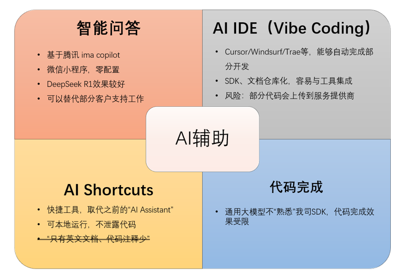
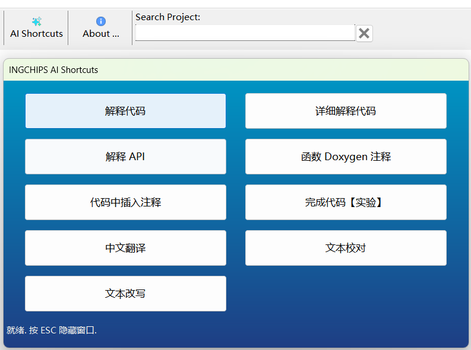
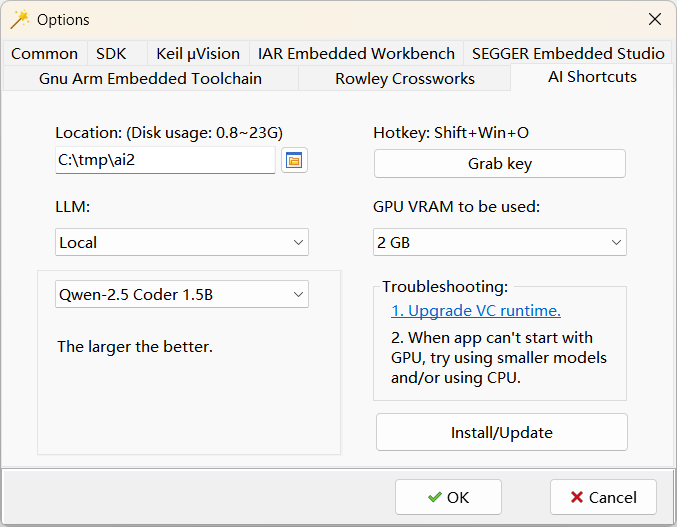

开发者可以多方式使用 AI 辅助开发。

代码完成
代码完成是最基础的 AI 辅助功能。能根据上下文自动补全代码，提供智能的代码建议， 提升开发效率。它不仅可以补全单行代码，还能生成完整的函数实现。支持代码补全的工具很多，既有 GitHub Copilot 等商业方案， 也有 Cline、Twinny 等开源软件、插件。
由于大模型不“熟悉” SDK，代码完成时可能存在较多“幻觉”。
AI IDE
参考这篇 博客，配置 AI IDE 环境， 体验“氛围编程”（Vibe Coding）。
智能问答
AI 捷径（AI Shortcuts）
AI Shortcuts 包含了几种常用功能，使用便捷：

AI Shortcuts 通过 Wizard 安装。打开 Option 窗口的 AI Shortcuts 页面，设置安装路径、热键等。 选择不同可用 GPU 显存大小，向导会自动推荐合适的本地大模型。也选择云端大模型，开发者需要填写申请到的 API Key。 完成设置后，点击 Install/Update 完成安装。后续更改设置后，同样可以点击 Install/Update 完成更新。

下面演示了“详细解释代码”功能。这个演示使用的是 DeepSeek R1：